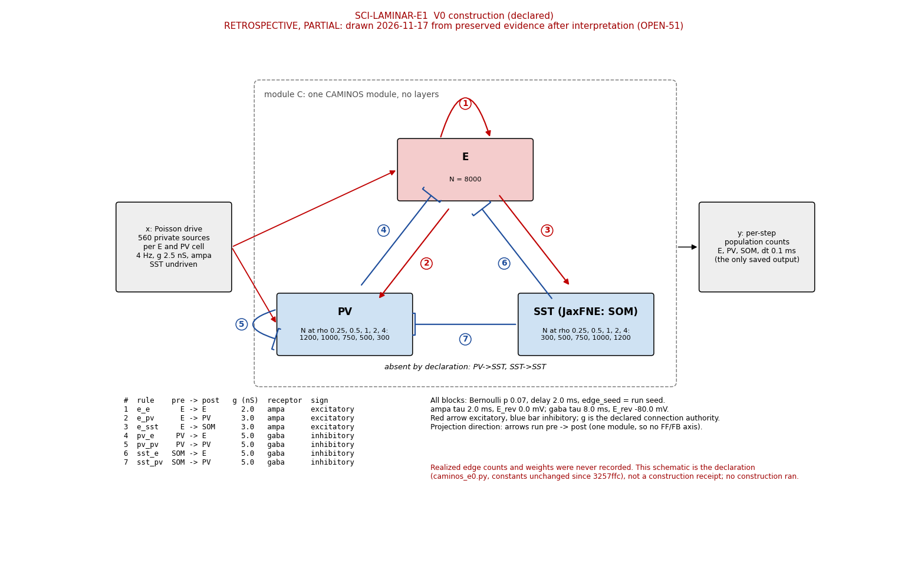
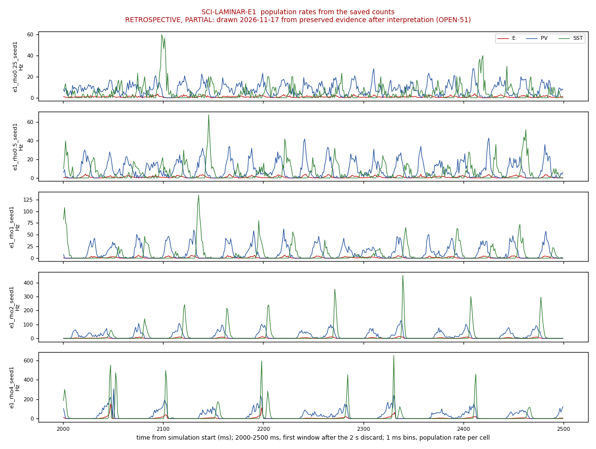
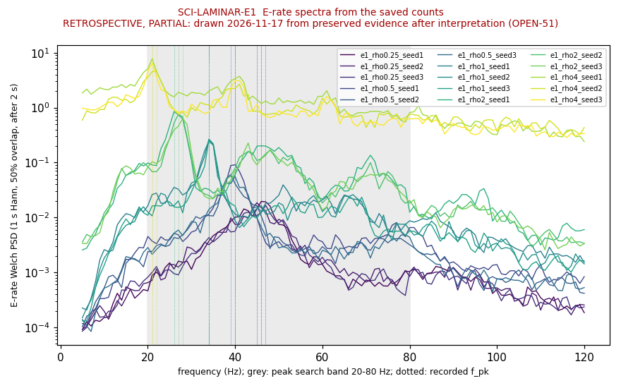
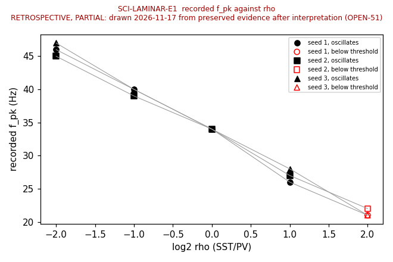

RETROSPECTIVE, PARTIAL: drawn 2026-11-17 from preserved evidence after interpretation (OPEN-51). Result commit 8200fac. Every counts file matched its recorded sha256 and reproduced its committed run JSON (spikes kept, f_pk, peak excess, oscillation call, PV-SST lag) before drawing. Sources and hashes: provenance.json.




| run | N_PV/N_SST | E Hz | PV Hz | SST Hz | f_pk Hz | peak excess | oscillates | lag PV-SST ms | wall s | counts sha256 |
|---|---|---|---|---|---|---|---|---|---|---|
| e1_rho0.25_seed1 | 1200/300 | 0.837 | 7.948 | 4.114 | 46.0 | 19.495 | True | 8.0 | 2453 | eed03c5eda28078b |
| e1_rho0.25_seed2 | 1200/300 | 0.842 | 7.962 | 4.065 | 45.0 | 17.399 | True | 8.0 | 2565 | fd0e731abc0e3301 |
| e1_rho0.25_seed3 | 1200/300 | 0.819 | 7.973 | 4.008 | 47.0 | 15.241 | True | 7.800000000000001 | 2523 | 5a50fbe94e76cd1f |
| e1_rho0.5_seed1 | 1000/500 | 0.906 | 8.880 | 4.860 | 40.0 | 28.553 | True | 7.800000000000001 | 2483 | 10b95ab35ad60585 |
| e1_rho0.5_seed2 | 1000/500 | 0.889 | 8.851 | 4.645 | 39.0 | 22.739 | True | 7.9 | 2459 | 8a8eeaf858da40d4 |
| e1_rho0.5_seed3 | 1000/500 | 0.886 | 8.852 | 4.623 | 40.0 | 20.421 | True | 8.0 | 2421 | 6f49c57caa1313a8 |
| e1_rho1_seed1 | 750/750 | 1.109 | 11.374 | 7.008 | 34.0 | 16.294 | True | 6.9 | 2129 | ac5a4415af817472 |
| e1_rho1_seed2 | 750/750 | 1.068 | 11.249 | 6.727 | 34.0 | 18.346 | True | 7.2 | 2131 | f7d2a3b1a68c87cc |
| e1_rho1_seed3 | 750/750 | 1.053 | 11.131 | 6.508 | 34.0 | 20.798 | True | 7.4 | 2157 | e2b70bdc99ed611e |
| e1_rho2_seed1 | 500/1000 | 1.727 | 17.977 | 13.131 | 26.0 | 11.327 | True | 5.7 | 1499 | 9ff48508f2ef1ded |
| e1_rho2_seed2 | 500/1000 | 1.658 | 17.806 | 12.348 | 27.0 | 10.195 | True | 5.5 | 1467 | a3a3e819a0ed30e9 |
| e1_rho2_seed3 | 500/1000 | 1.658 | 17.627 | 12.242 | 28.0 | 8.739 | True | 5.6000000000000005 | 1485 | 5dde113bb719900e |
| e1_rho4_seed1 | 300/1200 | 3.926 | 29.863 | 17.892 | 21.0 | 3.044 | False | 4.5 | 1476 | 024a24a0beece805 |
| e1_rho4_seed2 | 300/1200 | 3.863 | 30.178 | 19.089 | 22.0 | 3.258 | False | 4.3 | 1505 | 868d748ccde91102 |
| e1_rho4_seed3 | 300/1200 | 3.711 | 29.857 | 18.892 | 21.0 | 4.776 | False | 4.5 | 1510 | 0648b217445440ae |
Raster, per-cell spike times, membrane potential, I_net, H, A, m(H), and realized edges and weights: the runs saved only per-step population counts (caminos_e0.py run() sums the raster in memory), so none of these exists. The model has no plasticity. No field or LFP proxy was recorded. V1 and V2 are absent for the same reason; this lineage's visualization set stays incomplete under manifests/visualization_contract.json.